Indicators
Regional SDG 4 Monitor
I redesigned and refactored the dashboard interface for UNESCO’s Regional SDG 4 Monitor.
Research · education · data
I work with data and examine how it is produced and used.
I research education issues and build indicators, visualizations and tools that help teams explore evidence and make decisions.
I am an education researcher, university lecturer and consultant. I work on information management, data analysis and visualization with technical teams, international organizations and public institutions.
My work includes assessing education information systems, analysing large-scale assessments, and producing evidence on educational trajectories and inequalities. I have worked with teams at UNESCO, IIEP-UNESCO, IDB and OEI.
Licentiate and teaching degrees in Education Sciences from UNICEN. Specialist in Social Sciences from FLACSO Argentina, with a master’s degree in Big Data and Data Visualization from TECH, Mexico. Currently pursuing a master’s degree in Artificial Intelligence and Knowledge Engineering at TECH, Mexico.
Spanish version forthcoming.
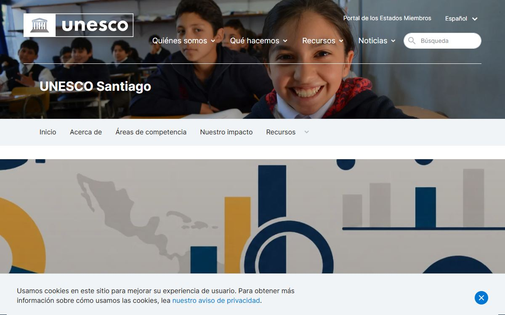
Explore regional education progress Regional SDG 4 Monitor Compare education indicators across countries
Education indicators for Latin America
Compare education indicators across countries
Education indicators for Latin America
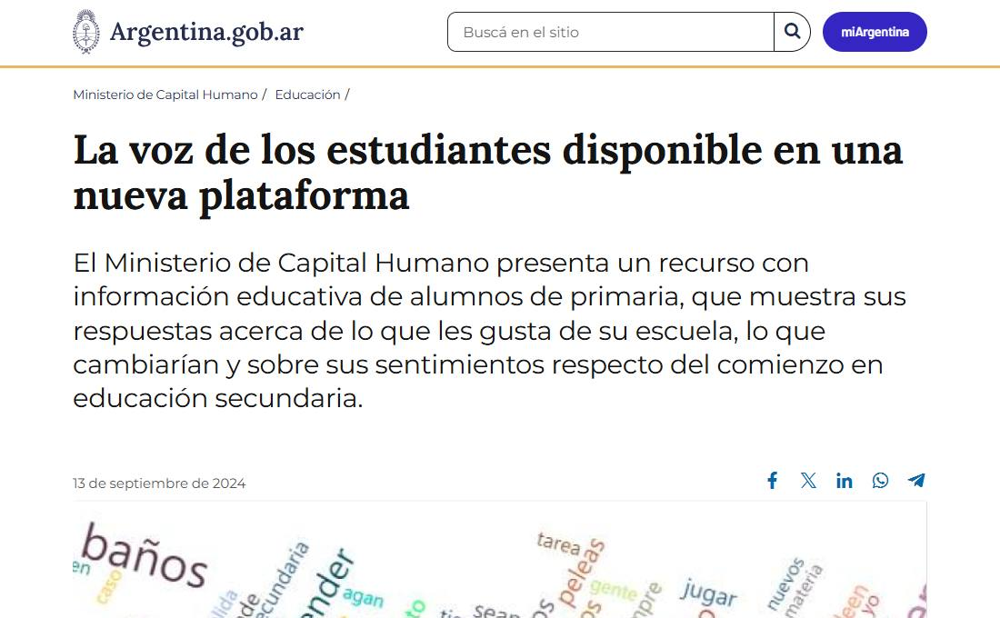
Analyse open-ended responses at scale Student voices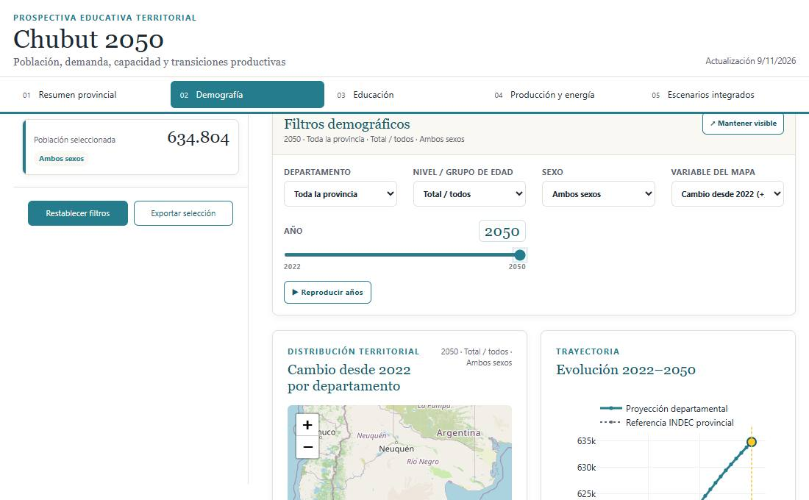
Explore scenarios for regional planning Chubut 2050 · Territorial scenarios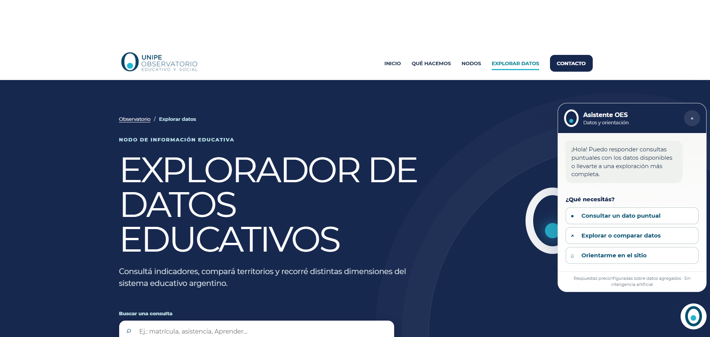
Explore data with a query and navigation assistant OES Education Data ExplorerNo results in this category.
Indicators
I redesigned and refactored the dashboard interface for UNESCO’s Regional SDG 4 Monitor.
Indicators
I designed, developed and implemented the Power BI interface for SITEAL to make it easier to explore and compare education indicators across Latin America.
Research
In 2023, I processed primary students’ open-ended responses and visualized the results for the SICDIE dashboard.
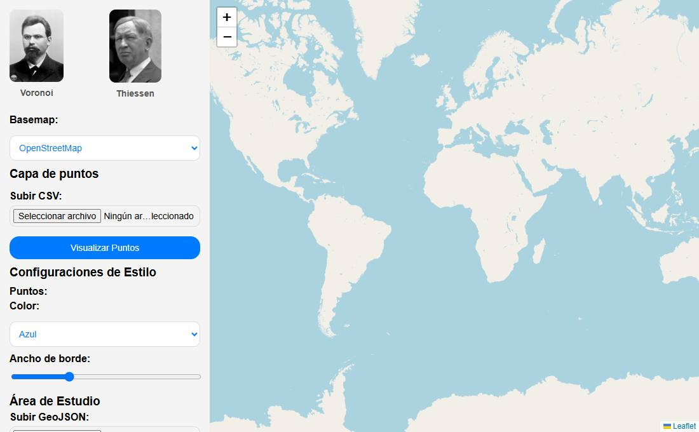
Geospatial
A mapping tool for generating and exploring proximity areas from points..
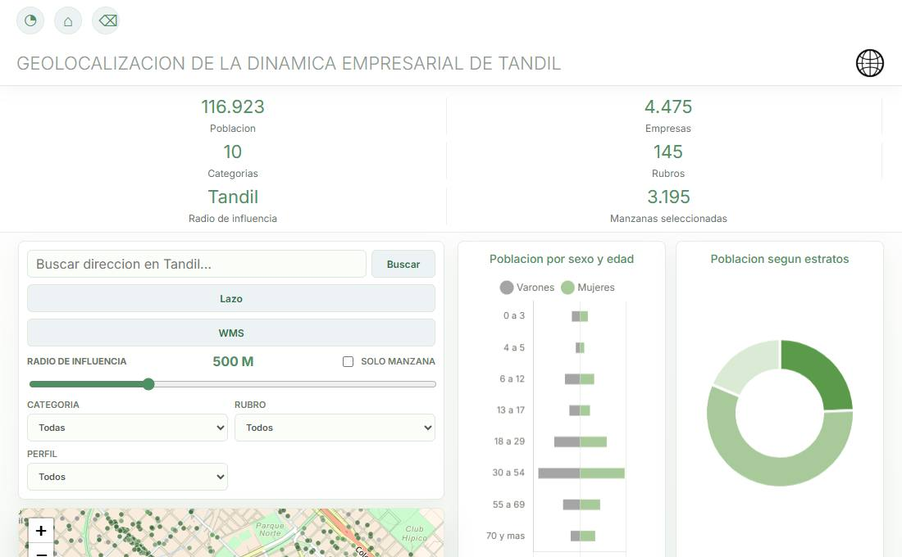
Geospatial
A mapping application for exploring commercial activity and its relationship to spatial planning..
Education planning
Chubut 2050 brings together population projections, education capacity and productive activity to explore regional planning decisions.
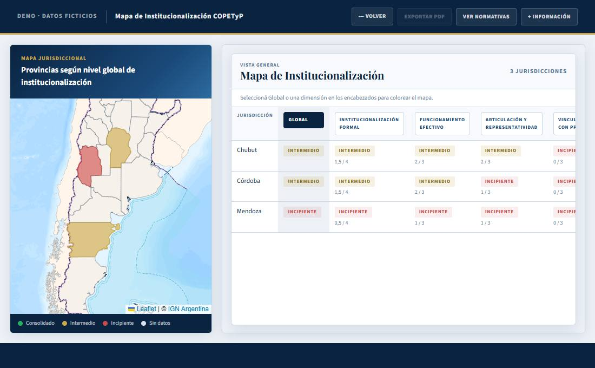
Education planning
A demo of the map of education, work and production councils.
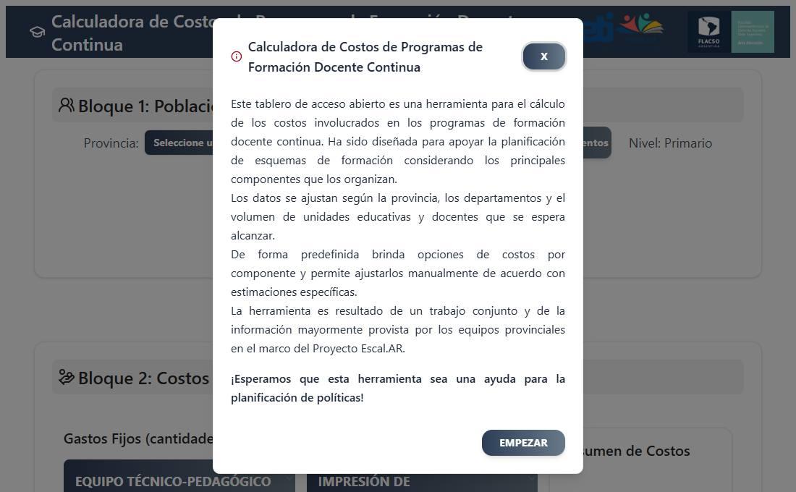
Tools
An application for estimating the cost of continuing teacher training programmes and exploring budget composition..
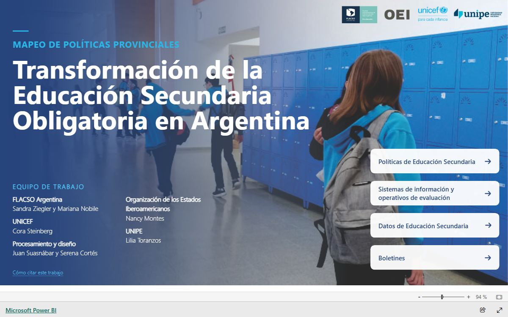
Education planning
An interactive Power BI dashboard mapping policies related to secondary education reform..
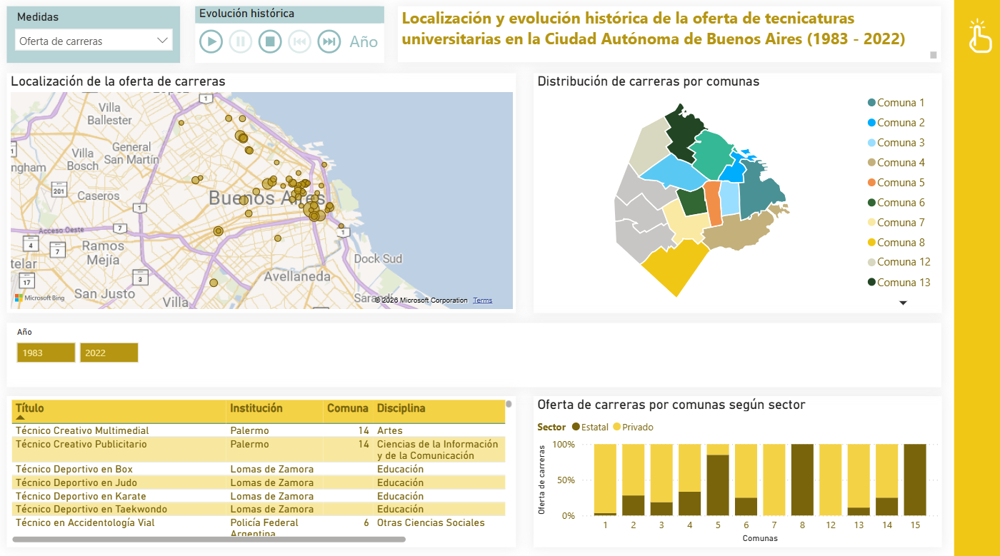
Indicators
An interactive Power BI dashboard showing the technical programmes available in Buenos Aires City..
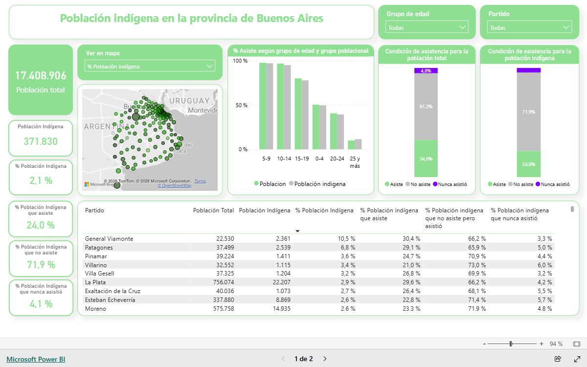
Research
A territorial analysis of the Indigenous population of Buenos Aires Province based on the 2022 Census..
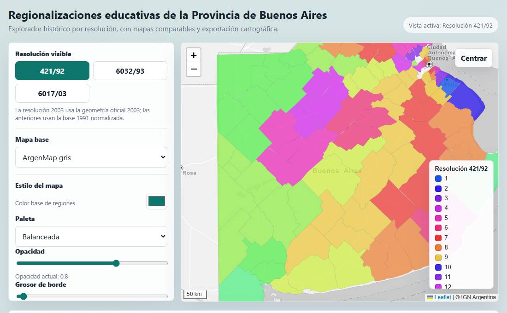
Geospatial
A web map for exploring criteria used to define education regions in Buenos Aires Province..
Web and assistants
I developed the Education and Social Observatory’s data explorer in WordPress.
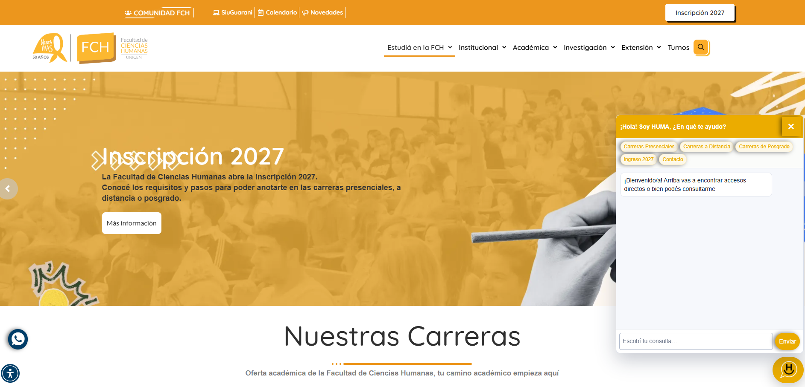
Web and assistants
I developed the first phase of the Faculty of Human Sciences virtual assistant.
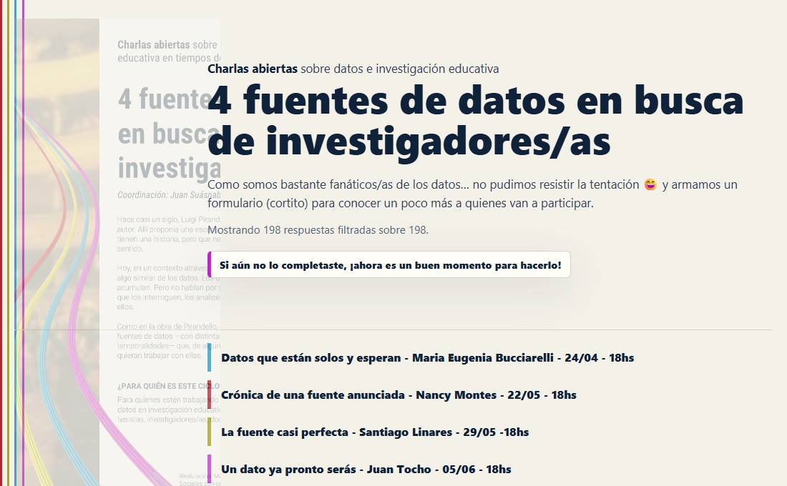
Teaching
A seminar on using different sources of information in education research.